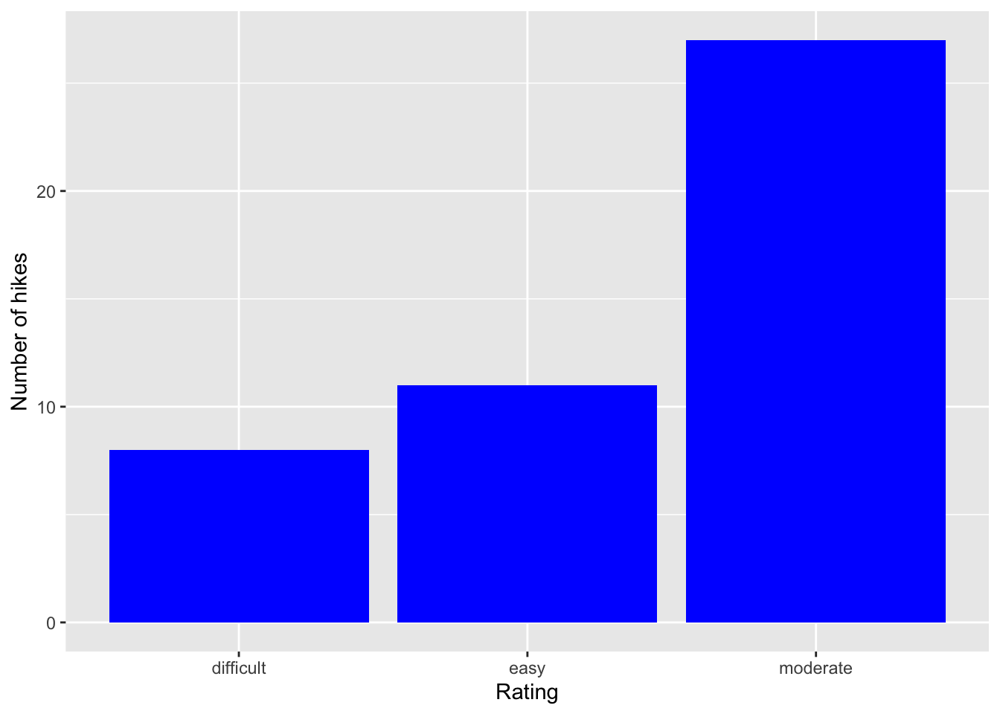
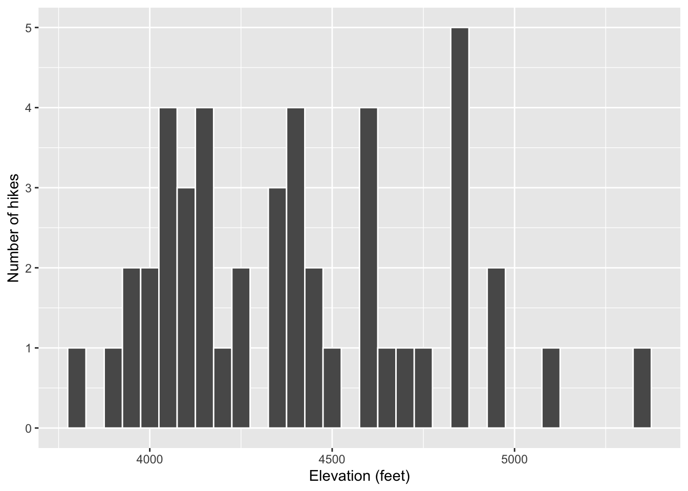

── Attaching core tidyverse packages ──────────────────────── tidyverse 2.0.0 ──
✔ dplyr 1.1.4 ✔ readr 2.1.5
✔ forcats 1.0.0 ✔ stringr 1.5.1
✔ ggplot2 3.5.1 ✔ tibble 3.2.1
✔ lubridate 1.9.4 ✔ tidyr 1.3.1
✔ purrr 1.0.2
── Conflicts ────────────────────────────────────────── tidyverse_conflicts() ──
✖ dplyr::filter() masks stats::filter()
✖ dplyr::lag() masks stats::lag()
ℹ Use the conflicted package (<http://conflicted.r-lib.org/>) to force all conflicts to become errors
13 Exercise 3
Code
ggplot(hikes, aes(x = rating))
14 Exercise 4
Code
# adds bars with the count of how many in each ratingggplot(hikes, aes(x = rating)) +geom_bar()
Code
# Builds graph and capitalizes the title of x and y axisggplot(hikes, aes(x = rating)) +geom_bar() +labs(x ="Rating", y ="Number of hikes")
Code
# adds bars and makes them blueggplot(hikes, aes(x = rating)) +geom_bar(fill ="blue") +labs(x ="Rating", y ="Number of hikes")

Code
# bar graph filled with blue with orange outlineggplot(hikes, aes(x = rating)) +geom_bar(color ="orange", fill ="blue") +labs(x ="Rating", y ="Number of hikes")
Code
# bar graph with blue and orange outling but just a grid backgroundggplot(hikes, aes(x = rating)) +geom_bar(color ="orange", fill ="blue") +labs(x ="Rating", y ="Number of hikes") +theme_minimal()
15 Exercise 8
Code
ggplot(hikes, aes(x = elevation)) +geom_bar()
16 Exercise 9
Code
# makes a histogramggplot(hikes, aes(x = elevation)) +geom_histogram()
`stat_bin()` using `bins = 30`. Pick better value with `binwidth`.
Code
# seperartes the bars of the histogram with a white lineggplot(hikes, aes(x = elevation)) +geom_histogram(color ="white")
`stat_bin()` using `bins = 30`. Pick better value with `binwidth`.
Code
# white outline with a blue fillggplot(hikes, aes(x = elevation)) +geom_histogram(color ="white", fill ="blue")
`stat_bin()` using `bins = 30`. Pick better value with `binwidth`.
Code
# clarifys the x and y axis titlesggplot(hikes, aes(x = elevation)) +geom_histogram(color ="white") +labs(x ="Elevation (feet)", y ="Number of hikes")
`stat_bin()` using `bins = 30`. Pick better value with `binwidth`.
Code
# made the bars thicker and combined setionsggplot(hikes, aes(x = elevation)) +geom_histogram(color ="white", binwidth =50) +labs(x ="Elevation (feet)", y ="Number of hikes")

Code
#made the bars thinner and changed their color to whiteggplot(hikes, aes(x = elevation)) +geom_histogram(color ="white", binwidth =5) +labs(x ="Elevation (feet)", y ="Number of hikes")
Code
# made the width thicker than the orignalggplot(hikes, aes(x = elevation)) +geom_histogram(color ="white", binwidth =200) +labs(x ="Elevation (feet)", y ="Number of hikes")
17 Exercise 11
Code
#makes line blueggplot(hikes, aes(x = elevation)) +geom_density(color ="blue")
Code
# fills everyting under line with blueggplot(hikes, aes(x = elevation)) +geom_density(fill ="blue")
18 Exercise 14
Code
# Data on students in this classsurvey <-read.csv("https://hash-mac.github.io/stat112site-s25/data/survey.csv")# World Cup dataworld_cup <-read.csv("https://raw.githubusercontent.com/rfordatascience/tidytuesday/master/data/2022/2022-11-29/worldcups.csv")
Source Code
---title: "Univariate Viz"---Use this file for practice with the **univariate viz** in-class activity. Refer to the class website for details.```{r}# Import datahikes <-read.csv("https://mac-stat.github.io/data/high_peaks.csv")```# Exercise 1```{r}head(hikes)```# Exercise 2```{r}# Load the packagelibrary(tidyverse)```# Exercise 3```{r}ggplot(hikes, aes(x = rating))```# Exercise 4```{r}# adds bars with the count of how many in each ratingggplot(hikes, aes(x = rating)) +geom_bar()``````{r}# Builds graph and capitalizes the title of x and y axisggplot(hikes, aes(x = rating)) +geom_bar() +labs(x ="Rating", y ="Number of hikes")``````{r}# adds bars and makes them blueggplot(hikes, aes(x = rating)) +geom_bar(fill ="blue") +labs(x ="Rating", y ="Number of hikes")``````{r}# bar graph filled with blue with orange outlineggplot(hikes, aes(x = rating)) +geom_bar(color ="orange", fill ="blue") +labs(x ="Rating", y ="Number of hikes")``````{r}# bar graph with blue and orange outling but just a grid backgroundggplot(hikes, aes(x = rating)) +geom_bar(color ="orange", fill ="blue") +labs(x ="Rating", y ="Number of hikes") +theme_minimal()```# Exercise 8```{r}ggplot(hikes, aes(x = elevation)) +geom_bar()```# Exercise 9```{r}# makes a histogramggplot(hikes, aes(x = elevation)) +geom_histogram()``````{r}# seperartes the bars of the histogram with a white lineggplot(hikes, aes(x = elevation)) +geom_histogram(color ="white") ``````{r}# white outline with a blue fillggplot(hikes, aes(x = elevation)) +geom_histogram(color ="white", fill ="blue") ``````{r}# clarifys the x and y axis titlesggplot(hikes, aes(x = elevation)) +geom_histogram(color ="white") +labs(x ="Elevation (feet)", y ="Number of hikes")``````{r}# made the bars thicker and combined setionsggplot(hikes, aes(x = elevation)) +geom_histogram(color ="white", binwidth =50) +labs(x ="Elevation (feet)", y ="Number of hikes")``````{r}#made the bars thinner and changed their color to whiteggplot(hikes, aes(x = elevation)) +geom_histogram(color ="white", binwidth =5) +labs(x ="Elevation (feet)", y ="Number of hikes")``````{r}# made the width thicker than the orignalggplot(hikes, aes(x = elevation)) +geom_histogram(color ="white", binwidth =200) +labs(x ="Elevation (feet)", y ="Number of hikes")```# Exercise 11```{r}#makes line blueggplot(hikes, aes(x = elevation)) +geom_density(color ="blue")``````{r}# fills everyting under line with blueggplot(hikes, aes(x = elevation)) +geom_density(fill ="blue")```# Exercise 14```{r}# Data on students in this classsurvey <-read.csv("https://hash-mac.github.io/stat112site-s25/data/survey.csv")# World Cup dataworld_cup <-read.csv("https://raw.githubusercontent.com/rfordatascience/tidytuesday/master/data/2022/2022-11-29/worldcups.csv")```